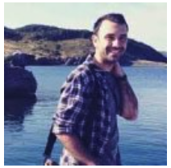
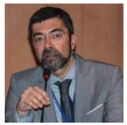
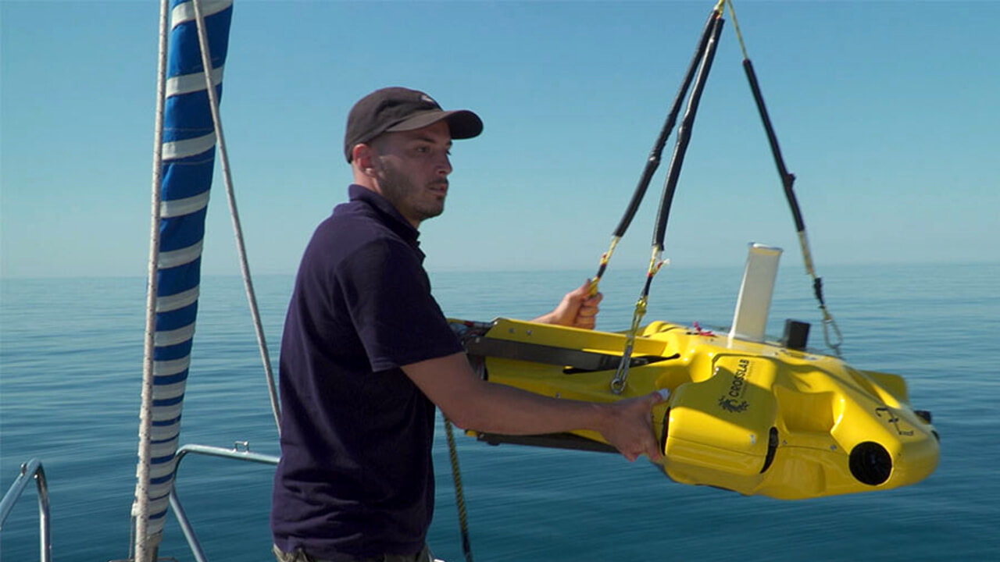
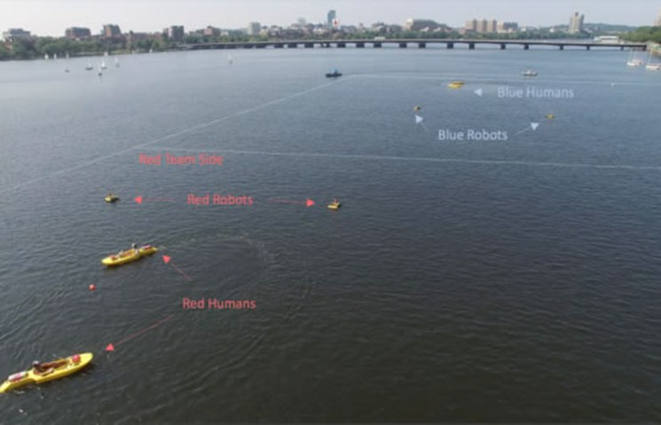
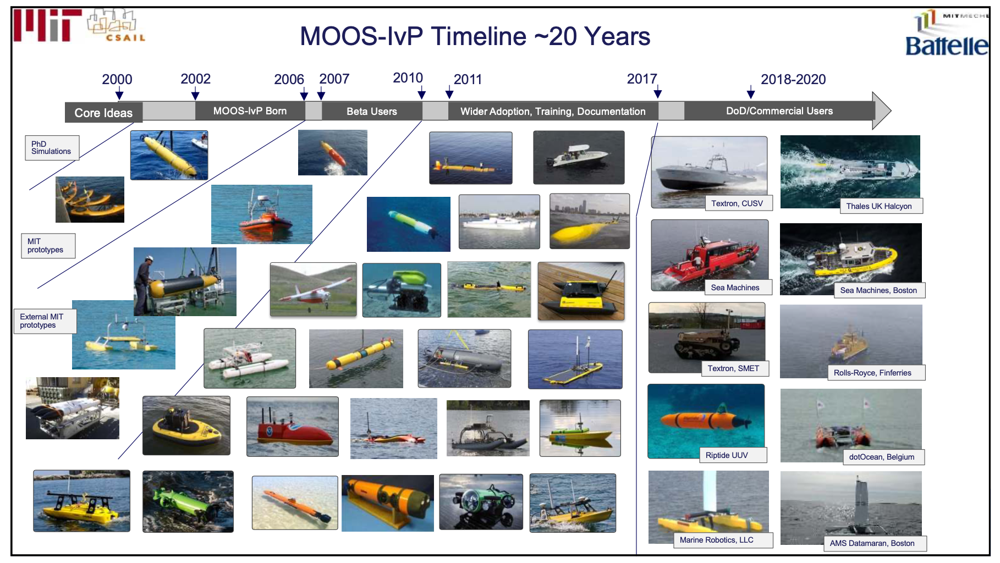

<iframe src="https://isme.unige.it" width="1000" height="600"></iframe>Introduction
What’s in this introduction?
- Motivations
- Why using robots to explore, monitor, inspect, etc. the sea?
- A short and rough description of underwater systems
- The Topics of the course
Lab overview
|
 |
|
 |

|

|

|

|

|

|
Robots and Platforms
|
 |

|
Locations
Some Recent and Current Projects
Human-Machine Teaming For the Maritime Environment

|
Multiple Autonomies
|
 |
Underwater acoustic source localization using a multi-robot system

|
Motivations
Science Questions
|
|
Celebrating Marie Tharp
- American geologist and oceanographic cartographer who helped prove the theories of continental drift.
- She co-published the first world map of the ocean floors.
- On Nov 21, 1998, the Library of Congress named Tharp one of the greatest cartographers of the 20th century.
<iframe src="https://www.google.com/doodles/celebrating-marie-tharp" width="1000" height="600"></iframe>

|
Manuscript painting of Heezen-Tharp “World ocean floor” map by Berann (~1955)
Finding the Endurance
The wreck of Sir Ernest Shackleton’s ship ‘Endurance’ has been found off the coast of Antarctica more than a century after it sank.
Historian Dan Snow, who is a member of the Endurance22 expedition team, said the discovery was ‘like a miracle’ and the ship is ‘almost perfectly preserved’
|
|

|

|

|

|
see this for more!
Blackbox recovery
|
|
Air France 447 crash from Rio to Paris, June 1st, 2009

|
</tr>

|

|
Countries involved - Origin - Destination - Airspace at accident location - Airline company - Engines manufactures - Insurance companies - Passengers citizenship
Recovery
- 13 aircrafts and 2 helicopters (Brasil, France, USA, Spain)
- 8 Ships (Brasil, France, USA)
- 2 6000m Manned Submarine (the Nautile)
- 1 Nuclear Submarine (France)
- 3 Autonomous Underwater Vehicles (AUVs)
- 1 Remotely Operated Vehicle (ROV)
- 1 million \(km^2\) of ocean explored
- According to Wikipedia, the continental United States of America (the 48 states between Canada and Mexico) is 8,080,464.4 square kilometers.
- cost \(\approx 30\) MEuros (in 2009)
- completed 2Y after the crash
<td> <img src="./images/1.introduction/6.remora.png" alt="black-box" style="height: 250px;"/> </td>
</tr>

|

|
Installation of Procution Well Jumper
|
|
- Vehicle localised using acoustic baselines
Operating ROVs
Remotely operated vehicles, or ROVs, allow us to explore the ocean without actually being in the ocean.
These underwater machines are controlled by a person typically on a surface vessel, using a joystick in a similar way that you would play a video game. A group of cables, or tether, connects the ROV to the ship, sending electrical signals back and forth between the operator and the vehicle.
Most ROVs are equipped with at least a still camera, video camera, and lights, meaning that they can transit images and video back to the ship. Additional equipment, such as a manipulator or cutting arm, water samplers, and instruments that measure parameters like water clarity and temperature, may also be added to vehicles to allow for sample collection.
First developed for industrial purposes, such as internal and external inspections of underwater pipelines and the structural testing of offshore platforms, ROVs are now used for many applications, many of them scientific.
They have proven extremely valuable in ocean exploration and are also used for educational programs at aquaria and to link to scientific expeditions live via the Internet.
ROVs range in size from that of a small computer to as large as a small truck. Larger ROVs are very heavy and need other equipment such as a winch to put them over the side of a ship and into the water.
While using ROVs eliminates the “human presence” in the water, in most cases, ROV operations are simpler and safer to conduct than any type of occupied-submersible or diving operation because operators can stay safe (and dry!) on ship decks.
ROVs allow us to investigate areas that are too deep for humans to safely dive themselves, and ROVs can stay underwater much longer than a human diver, expanding the time available for exploration.

|

|

|
Old approach: - Off-shore operator acts on the vehicle - Off-shore operator controls the arm motors directly (typically limited number of joints) - Interactions between arm and vehicle’s body - Voice coordination between the two - Manned Visual Feedback
ROV More recently
|
On the18 August 2012 Isis, the UK’s iconic robotic submarine or ROV (Remotely Operated Vehicle) entered the cold waters of the Atlantic 300 miles from the coast of Spain. The NERC research vessel RRS James Cook carried the newly rebuilt vehicle on its first sea trials after an accident in early 2011 seriously damaged the research ROV.
- Structured environments
- Operators know how the environment looks like
- ROV have automatic controls for:
- station keeping (attitude and position) using up to 8 motors (depends on how many DoF they can control)
- Force feedback to control the arm
- Operator acts on a representation of the manipulator (task space)
Working with ROVs
- 13 people / 24h
- 8 Pilot/Technicians (4h shift)
- 4 Supervisors (4h shift)
- 1 Superintendent (on call)
- How long onboard?
- 4 to 6 weeks
- ROV crews work 6h 7/7

|
Ocean Exploration Trust’s ROV Hercules and Argus were stranded on the seafloor last week, but were recovered thanks to cooperation from several ocean science and exploration institutions Woods Hole, MA — On Thursday, September 2, 2021 the remotely operated vehicle (ROV) Jason succeeded in helping recover two other underwater vehicles, ROV Hercules and Argus, that were stranded on the seafloor off the coast of British Columbia last week when their tether to the surface broke. The operation came about as a result of close collaboration and mutual aid that are a hallmark of the ocean science and exploration community and the maritime community as a whole.
Renewable energy
- Marine energy: Tidal stream and wave power
|
Power/communication cables
Fisheries and aquaculture

|
- Food
- Health
- Security
- Safe
|
Marine Autonomy Trends


Early commercial marine vehicles
At the turn of the century, there weren’t many commercial marine vehicles for sale


Early Autonomy

Researcher/Scientists were not content to be limited to the vehicle manufacturer’s autonomy system.
How can they run the autonomy system from the payload computer, i.e., Payload Autonomy
Do you see limitations or concerns with this?
Autonomy can be complex, sometime is data driven, might be not deterministic and might increase the risk of losing a vehicle. Losing an AUV might set a research group back many years.
Marine Autonomy Trends
- Scripted to Adaptive to Human-Machine Systems
</tr>

|

|
Scripted: trajectory largely determined before the vehicle is launched.
Sensing: Robot needs to know where it is.
Adaptive, collaborative: trajectory depends in part on what collaborative vehicles are doing
Sensing: Robot needs to know about others
Scripted Missions
- 20 years ago, marine autonomy was not a familiar term
- Robots went from waypoint to waypoint and were retrieved.
- Scientist then offloaded the data for analysis.
- The control system, navigation system and all software, were part of what the vehicle manufacturer sold with the platform.
|
|
- Can you think of limitations? and of advantages?
Adaptive autonomy
- 10 years later (10 years ago): the rise of adaptive autonomy.
- Sensor data was no longer just retrieved, post-mission.
- Robots processed sensor data during the mission and adapted their mission trajectories.
- Unscripted, dynamic missions: the autonomy design space becomes huge.
- Vehicle manafurers focused their supported missions based on core users.
- Opened payload interface to allow third party autonomy (industry, academic labs, defense labs)
<td></td>
<td> <img src="./images/1.introduction/22.adaptive-autonomy-reacquire.png" alt="23.human-machine" style="height: 350px;"/> </td>
</tr>

|
Marine Autonomy Trends
- MOOS-IvP: Increased level of adoption (original and highly recommended slide pack available [here])(https://oceanai.mit.edu/2.680/pmwiki/pmwiki.php?n=Site.Lectures)
|
 |
A tangible example
|
And a blog post on the World’s first autonomous ferry

Autonomy Trends
- After more than a decade of software innovation in the payload, there are now many good options for specialized autonomy, sensing, navigation and communications
- Many of these software solutions come from different developers/vendors.

- Great benefits for end-users when best-of-practice solutions can be combined
- Key challenge: how to design system protocols/messages to develop systems of autonomy systems

|
Autonomous Vehicles
- ROV
- AUV
- Gliders
- Surface vehicles
Next Challenges

|
Course objectives
Primarily, we will talk about Sensing, Communications and Autonomy - Effective autonomy can compensate for limits in sensing and communications. - Effective communications can compensate for limits in sensing and autonomy.
Intelligence/Perceptiveness/Connectedness is part of a bigger picture where: - Smarter systems means more can be done with fewer systems. - Smarter systems means more can be done with less capable (lower cost) systems.
Class Structure
- Underwater acoustics, oceanography and geoacoustics
- Majority sensors use acoustics
- Acoustics depends on oceanography
- Underwater navigation
- Acoustic sensors
- Dynamic models of underwater vehicles
Lectures are complemented with small projects (in groups of 2/3 people) - groups report and discuss periodically